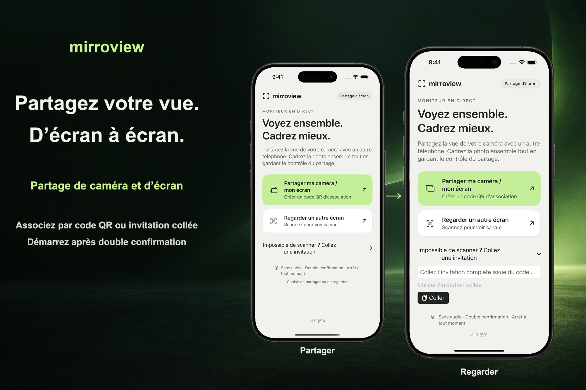

Jumeler en personne
Une personne partage une invitation. L’autre scanne le code QR ou colle l’invitation, puis les deux confirment la session.
Une vue partagée, par choix
Partagez l’écran de votre iPhone ou iPad avec une personne à proximité. Les deux appareils doivent exécuter iOS ou iPadOS 17 ou une version ultérieure. Les deux personnes confirment la session, et l’émetteur approuve la capture d’écran via l’interface système.

Une personne partage une invitation. L’autre scanne le code QR ou colle l’invitation, puis les deux confirment la session.
L’écran d’accueil lance un partage de tout l’écran. Après l’autorisation d’iOS ou d’iPadOS, l’émetteur peut ouvrir une autre application, y compris Appareil photo, pour en afficher l’écran.
Mettez fin à la session depuis l’un ou l’autre des appareils. Pour votre première connexion, utilisez le même réseau Wi-Fi local accessible. La disponibilité de la connexion de proximité dépend des appareils, de la prise en charge système et des conditions sans fil.
Le partage d’écran peut révéler des notifications et d’autres informations privées. L’application ne transmet pas d’audio. Le spectateur peut toujours prendre une capture d’écran, enregistrer son écran ou photographier ce qu’il voit. Certains contenus protégés peuvent apparaître vides.